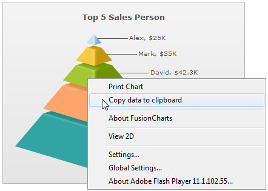

| Exporting Chart Data using context menu | ||||||||||||
FusionWidgets allows you to export data from your charts in CSV format. The export of data can be triggered in two ways:
Let's study both of them one by one. |
||||||||||||
| Setting up the chart to export data from context menu | ||||||||||||
|
To allow export of data using context menu, you need to specify the following in data: |
||||||||||||
<chart showExportDataMenuItem='1' caption='Top 5 Sales Person' numberPrefix='$' isSliced='1'>
<set label='Alex' value='25000' />
<set label='Mark' value='35000' />
<set label='David' value='42300' />
<set label='Graham' value='65300' />
<set label='John' value='91300' />
</chart>{
"chart":{
"showexportdatamenuitem":"1",
"caption":"Top 5 Sales Person",
"numberprefix":"$",
"issliced": "1"
},
"data":[
{ "label":"Alex", "value":"25000" },
{ "label":"Mark", "value":"35000" },
{ "label":"David", "value":"42300" },
{ "label":"Graham", "value":"65300" },
{ "label":"John", "value":"91300" }
]
}
|
||||||||||||
As soon as showExportDataMenuItem='1' is set in the chart, a new item is added to the chart's context menu, as shown below: |
||||||||||||
 See a live sample! |
||||||||||||
The label of this menu item can be customized by setting: | ||||||||||||
|
When you select this item, the data of this chart will be copied to your clipboard. If you open any text editor and paste the content of the clipboard, you'll get something as under: |
||||||||||||
"Label","Value" "Alex","25000" "Mark","35000" "David","42300" "Graham","65300" "John","91300" |
||||||||||||
This is basically the CSV representation of your chart's data. Let us next see how to format the CSV data output using various export related XML attributes that FusionWidgets exposes. |
||||||||||||
| Customizing the output CSV format | ||||||||||||
You can customize the following aspects of the output CSV data:
The following attributes help in configuring this: |
||||||||||||
|
||||||||||||
In the next section, we'll see how to access this data using JavaScript API. |